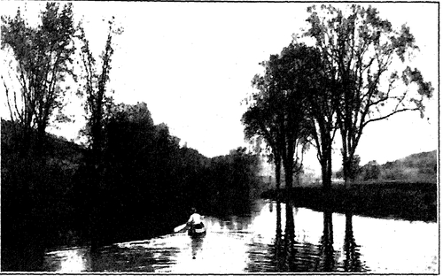
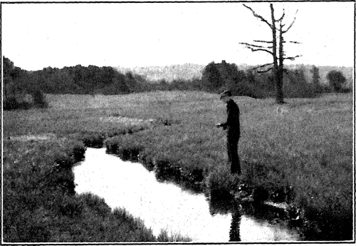
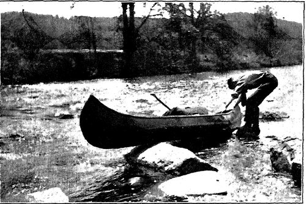
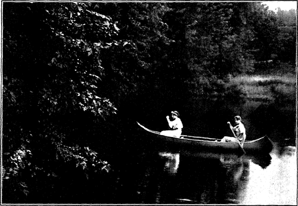

The Native Landscape. Part 3
Description
This section is from the book "The Natural Style In Landscape Gardening", by Frank A. Waugh. Also available from Amazon: The Natural Style in Landscape Gardening.
The Native Landscape. Part 3
The forests are more friendly and familiar. There is more of the feeling of domesticity about them. It is a strange fact that in the early settlement of America pioneers who had their choice avoided the prairies and settled first among the forests, even though they were there compelled to clear away the trees with infinite labor to make fields for farming. The natural human love for the forest landscape needs nothing more than mention. It is worth while to recall, however, how this has been put to special use in such enterprises as the "forest cure." It is well known that many sanatoria have been established in the forests and that thousands of men and women have found life and health simply in being exposed to the healing influence of the crowded trees.
EXPLORATIONS INLAND.
THE MEADOW BROOK.
Photographs by the Author.
Besides these four main types of landscape, there are minor types of considerable importance. There are great rivers which throughout their entire courses completely dominate the landscape. They establish its character. Any one who is to know the landscape should know some of the great rivers and should have felt their spell.
The little brooks too are well worthy of acquaintance. As they sing and gurgle down through the forests or roar down the mountainside, they too have a story to tell. It is a story to which every man and woman ought to listen.
There are many sections of country which could not be called mountainous, but which are characterized by their rolling hills. Such hilly country, whether found in central New York, Missouri, or Bohemia, has a character of its own. It is neither plains nor mountains, but a kind of human compromise. These hills are good to live with. They support large populations. They are mild and pleasant without being so tragic as the sea or mountains. For this reason they are psychologically better for daily human association. If one is a real lover of the landscape he will not seek always for the extreme and spectacular types. One of the greatest qualities in all art is restraint and the willingness to accept a moderate expression of feeling. This quality of moderation is expressed in the rolling hill country characteristic of wide sections on every continent. It is a type of landscape which has been too much neglected,—that is, there has been little attempt to understand its spiritual significance.
In some districts the character of the landscape is taken from its lakes. One whole section of England is called the Lake Country. The magnificent territory bordering on Lake Champlain, whatever its topography and its other beauties, must render chief homage to the incomparable lake. The lover of the landscape ought also to know some lakes.
PULLING OVER THE RAPHES.
Photograph by the Author.
INFORMAL COMPOSITION. GROUNDS OF THE MASSACHUSETTS AGRICULTURAL COLLEGE.
Designed and executed by the Author.
Everywhere where men live the landscape has been more or less changed. Where considerable populations have become established the landscape is much subdued. The most fertile countries are fully developed in farming lands. In some places the forests have been cut away. In others the prairies have been obliterated. In place of forests and prairies there are now checkered fields of corn and wheat interspersed with orchards and pastures. This agricultural landscape, however, has an effective appeal of its own. It is not unfair to say that it is quite as beautiful as the native landscape which it has supplanted. This type of landscape also has been widely overlooked. The American people especially have not felt its beauty nor understood its significance. In the old country civilization has done better. In England there is a lively and conscious love of the cultivated landscape, for practically all England is cultivated. In the German language the same feeling is recognized in the settled term Kultur-LandschafL Doubtless, we in America will presently come to a similar understanding of the beauty of well farmed country, and will learn to love the farm landscape and to realize its deeper spiritual significance.
The student and lover of the landscape must not only cultivate its acquaintance, he must especially seek what is beautiful in this outdoor world. He must discriminate. He must find the best and give his chief est homage to that.
It is one of the first requirements in art, though often overlooked, that one must find the best and associate with it chiefly. The beginner spends too much time criticizing what is bad or trying to improve what is indifferent. The artist will find beauty in many places where thoughtless or untrained persons overlook it; but wherever he may have to search, he will look only for what is good, dismissing from his attention as quickly as possible everything squalid or disorderly or ugly.
Now this exercise of seeking out whatever is best in the landscape and fixing the attention on that, is a perfectly simple undertaking and can be practiced by children. For some years I have experimented with this method of instruction in the public schools. The method is of enough importance to bear restatement.* A set of landscape exercises is made up, each one of which calls direct attention to some beautiful feature. Here are sample exercises :
No. 1. Trees. Where is the finest tree in town? What kind of a tree is it? How old? What is its history?
No. 2. Views. Where is the best view or outlook in town ? What can you see from this point ? How might this view be improved?
And so on. The characteristic feature of each exercise is that it sends the pupil to seek something beautiful, it leads him to consider carefully the relationships which influence its effect, it helps him to make comparisons, while appealing frankly to his personal preference (and this is fundamentally important) , it urges on his thought some reasons for his opinion.
When a series of such exercises, carefully planned and fairly superintended, are carried out in school, they lead to a pretty thorough acquaintance with the local landscape, always with emphasis on the features of greatest beauty. This constitutes genuine art education, and also it exemplifies the kind of acquaintanceship with the landscape which is fundamentally necessary to the man or woman who would know what the natural style of landscape gardening means.
* This plan of school instruction is more fully stated in my book "The Landscape Beautiful".
Continue to: